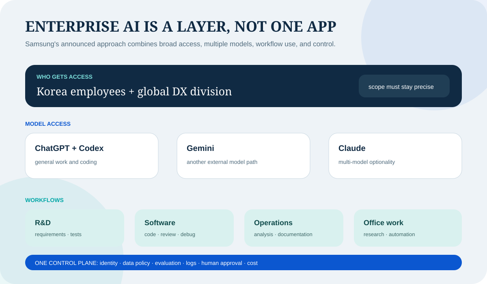

삼성전자, ChatGPT와 Codex를 대규모 배포한다
OpenAI는 2026년 6월 21일 삼성전자가 한국 임직원 전체와 글로벌 DX 부문 직원들에게 ChatGPT Enterprise와 Codex를 제공한다고 발표했다. 이번 소식은 단순한 도구 도입이 아니라, 생성형 AI가 대기업의 공통 업무 인프라로 들어가는 흐름을 보여준다는 점에서 중요하다.
Why This Post
이 글은 "AI가 어디서 실제로 쓰이기 시작했는가"를 보기 위해 쓴다
모델 성능 비교만으로는 시장 변화를 읽기 어렵다. 더 중요한 것은 어떤 회사가, 어떤 범위로, 어떤 업무에 AI를 실제 배포하느냐다. 삼성전자 같은 글로벌 제조 대기업의 대규모 배포는 AI가 실험 단계를 넘어 조직 운영층으로 이동하고 있음을 보여준다.
공식 발표가 밝힌 배포 범위
- OpenAI는 "ChatGPT Enterprise and Codex available to all Samsung Electronics employees in Korea" 라고 적었다.
- 또 이번 배포를 "one of OpenAI's largest enterprise launches ever" 라고 설명했다.
OpenAI 발표 원문에서 범위와 표현을 확인할 수 있다.
무엇이 실제로 배포되나
현재 공식 발표 기준으로 확인되는 범위는 명확하다. ChatGPT Enterprise와 Codex가 삼성전자 한국 임직원 전체, 그리고 글로벌 Device eXperience(DX) 부문 직원들에게 제공된다. OpenAI는 활용 영역으로 소프트웨어 개발, 마케팅, 제품 개발, 제조, 문서 작성, 정보 탐색과 분석을 함께 언급했다.
여기서 중요한 점은 Codex가 개발자만을 위한 기능으로 소개되지 않았다는 것이다. OpenAI는 Codex가 코드 작성과 리뷰, 디버깅뿐 아니라 내부 도구 제작, 웹사이트 생성, 워크플로 자동화 같은 비개발 업무에도 쓰일 수 있다고 설명했다. 이는 "코딩 AI"가 일반 사무 인력까지 확장되는 흐름으로 읽힌다.
왜 이 이슈가 큰가
첫째, AI 도입 단위가 팀 실험에서 조직 단위로 올라가고 있다. 둘째, 제조 대기업이 연구개발과 생산, 사무 기능을 한 번에 묶어 AI 활용 범위를 넓히기 시작했다. 셋째, 모델 경쟁이 "누가 더 똑똑한가"에서 "누가 더 안전하게 현업에 심어 넣는가"로 이동하고 있다는 신호다.
특히 삼성전자는 단순한 소프트웨어 회사가 아니라 반도체, 모바일, 가전, 제조 운영이 동시에 있는 기업이다. 이런 조직에서 AI 배포가 확대되면 AI는 채팅창 안 답변 도구가 아니라 실무 생산성과 실행 속도를 끌어올리는 공통 계층으로 자리 잡게 된다.
이 대목은 조심해서 봐야 한다
‘전 임직원’이라는 표현은 범위를 구분해 읽어야 한다. OpenAI 발표는 한국의 삼성전자 임직원 전체와 전 세계 DX 부문을 명시한다. 삼성전자 모든 해외 법인과 DS 부문 전체에 동일한 범위로 배포됐다고 넓혀 쓰면 안 된다. 연합뉴스도 5월 사내 공지를 인용해 6월부터 DX 부문이 외부 생성형 AI 서비스를 사용한다고 보도했다.

관련 공개 자료
삼성의 전략은 OpenAI 단독 도입이 아니다
삼성전자 뉴스룸은 6월 11일 DX 부문 임직원이 ChatGPT, Google Gemini, Anthropic Claude를 모두 활용할 수 있게 된다고 발표했다. 따라서 이번 건을 ‘삼성이 OpenAI 하나를 표준으로 선택했다’고 해석하면 좁다. 범용 대화와 검색, 코딩, 장문 분석 등 작업에 따라 여러 모델을 선택하는 멀티모델 전략에 가깝다.
멀티모델은 공급 중단과 가격 인상, 성능 변화에 대한 보험이 된다. 한 모델이 특정 업무에서 오류를 내거나 정책상 사용할 수 없을 때 다른 모델로 전환할 수 있다. 반면 모델별 보안 설정, 로그, 사용 정책과 비용 체계가 달라 운영 복잡성이 커진다. 통합된 사내 접속 계층과 공통 평가 기준이 필요하다.
제조 기업에서 활용 경로는 사무실보다 넓다
제품 개발에서는 요구사항과 시험 결과를 요약하고, 설계 검토 질문과 테스트 케이스의 초안을 만들 수 있다. 소프트웨어 조직은 Codex로 코드 탐색·작성·리뷰·디버깅을 보조하고, 반복적인 내부 도구와 마이그레이션 작업을 자동화할 수 있다. 최종 병합과 배포 책임은 기존 개발 절차에 남겨야 한다.
제조에서는 작업 표준서 검색, 설비 로그 요약, 원인 후보 정리와 교육 자료 생성이 현실적인 출발점이다. 모델이 생산 설비를 직접 제어하거나 품질 판정을 자동 승인하는 단계는 오류 비용이 훨씬 크므로 별도 검증과 안전 장벽이 필요하다. OpenAI 발표도 생산성·문제 해결 범위를 제시했을 뿐 자율 제어를 공식화한 것은 아니다.
마케팅과 영업은 지역별 문안 초안, 고객 의견 분류, 회의와 시장 자료 요약에서 시간을 줄일 수 있다. 다만 미공개 제품, 가격, 고객 정보가 모델에 들어가면 유출과 규제 위험이 생긴다. 편리한 사용 사례보다 어떤 데이터 등급까지 허용할지를 먼저 정해야 한다.
Enterprise라는 이름보다 실제 통제가 중요하다
대기업 배포에서 필요한 것은 사내 인증, 관리자 권한, 대화 보존 정책, 데이터의 학습 사용 여부, 지역별 저장과 감사 로그다. 제품 설명에 보안 기능이 있다고 해도 삼성의 구체적인 설정과 계약 조건은 공개 발표만으로 알 수 없다. 사용자는 허용된 사내 계정과 개인용 계정을 구분해야 한다.
반도체 설계, 소스코드, 출시 전 제품 사양과 고객 정보는 일반 업무 문서와 같은 정책으로 처리할 수 없다. 데이터 분류에 따라 입력을 차단하거나 마스킹하고, 고위험 저장소는 검색 연결 자체를 제한해야 한다. 민감 코드에는 사내 모델이나 격리된 실행 환경을 쓰는 혼합 구조가 필요할 수 있다.
Codex 같은 에이전트는 답변만 생성하지 않고 파일을 읽고 명령을 실행하거나 코드를 수정할 수 있다. 최소 권한, 승인 단계, 네트워크 접근 제한, 실행 로그와 자동 테스트가 필수다. 개발자가 만든 변경을 기존 코드리뷰·CI·보안 검사 없이 배포하게 해서는 안 된다.
교육은 프롬프트 강의보다 업무 재설계여야 한다
수만 명에게 계정만 열어주면 일부 적극적인 직원만 사용하고, 나머지는 검색 대체 수준에 머물 수 있다. 부서별로 실제 시간을 많이 쓰는 업무를 고르고, 좋은 사용 예와 금지 데이터를 함께 제공해야 한다. 결과를 검증할 도메인 지식과 오류 보고 경로도 교육에 포함돼야 한다.
내부 챔피언과 지원 조직은 유용하지만 성공 사례만 모으면 투자 효과를 과장할 수 있다. 사용 전후 처리 시간, 오류·재작업, 보안 사고, 직원 만족과 실제 제품 출시 주기를 함께 측정해야 한다. 생성한 토큰이나 로그인 수는 활동 지표일 뿐 사업 성과가 아니다.
대규모 도입이 인력과 협업에 미칠 변화
개발자와 비개발자의 경계는 일부 흐려질 수 있다. 기획·마케팅 직원이 간단한 내부 도구와 데이터 처리를 만들고, 개발자는 복잡한 구조와 검증에 더 집중할 수 있다. 그러나 비개발자가 만든 자동화가 운영 시스템에 퍼지면 소유자 없는 ‘그림자 소프트웨어’가 늘 수 있어 등록·리뷰·유지관리 책임을 정해야 한다.
관리자의 역할도 바뀐다. 초안 생산량보다 어떤 문제를 풀고 어떤 결과를 승인할지 결정하는 능력이 중요해진다. 직원 평가를 AI 사용량과 직접 연결하면 불필요한 사용과 품질 저하를 부를 수 있다. AI는 성과의 원인이 아니라 업무 수단으로 측정해야 한다.
한국 AI 시장에 주는 신호
삼성전자의 배포는 글로벌 모델 업체에 큰 레퍼런스인 동시에 국내 AI 기업에는 높은 기준을 제시한다. 한국어 성능만으로는 부족하고, 기업 인증·데이터 통제·에이전트 감사·글로벌 지원과 제조 현장 통합을 함께 제공해야 한다. 국내 모델은 민감 데이터와 특정 산업 업무에서 차별화할 기회가 있다.
삼성 자체의 모델·반도체·기기 사업과 외부 모델 도입도 경쟁 관계만은 아니다. 외부 도구로 직원의 생산성을 높이는 동시에 Galaxy와 가전, 반도체 제조에 필요한 자체 AI 역량을 유지할 수 있다. 핵심은 어떤 층을 외부에 맡기고 어떤 데이터·모델·칩을 내부 자산으로 남길지 정하는 것이다.
내가 보는 핵심
이 이슈의 본질은 "삼성이 OpenAI를 쓴다"가 아니다. 더 중요한 것은 대기업들이 AI를 특정 부서의 실험 도구가 아니라, 회사 전체 문제 해결 속도를 바꾸는 운영층으로 보기 시작했다는 점이다. 앞으로 AI 업계의 승부는 모델 성능 비교뿐 아니라 이런 대규모 실제 배포 사례에서 더 분명하게 드러날 가능성이 크다.
다만 배포 규모 자체가 성공은 아니다. 한국 전체와 글로벌 DX라는 범위를 정확히 구분하고, 멀티모델 접근을 하나의 보안·평가 체계로 묶으며, 사용량이 아니라 품질과 업무 시간을 측정해야 한다. 1년 뒤 볼 숫자는 계정 수보다 반복 업무 감소, 제품 개발 주기, 오류와 보안 사고다.
Comments
댓글